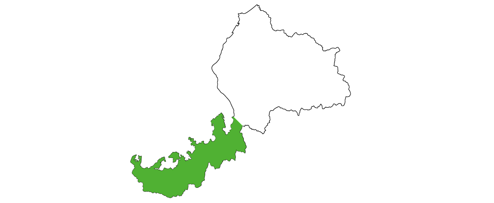

お知らせ
News
嶺南とは？
福井県には、嶺北地域（あわら市、福井市、鯖江市、大野市、勝山市、越前市、坂井市、永平寺町、越前町、南越前町、池田町）と
嶺南地域（敦賀市、小浜市、美浜町、高浜町、おおい町、若狭町）があります。
嶺南地域には敦賀市から南の地域（敦賀市の木の芽峠＝嶺よりも南の地域）といわれ、
二州地区（敦賀市、美浜町、若狭町《旧三方町》）と、若狭地区（小浜市、高浜町、おおい町、若狭町《旧上中町》）があります。
また、『若狭路』としても親しまれています。

引用元：福井県嶺南振興局